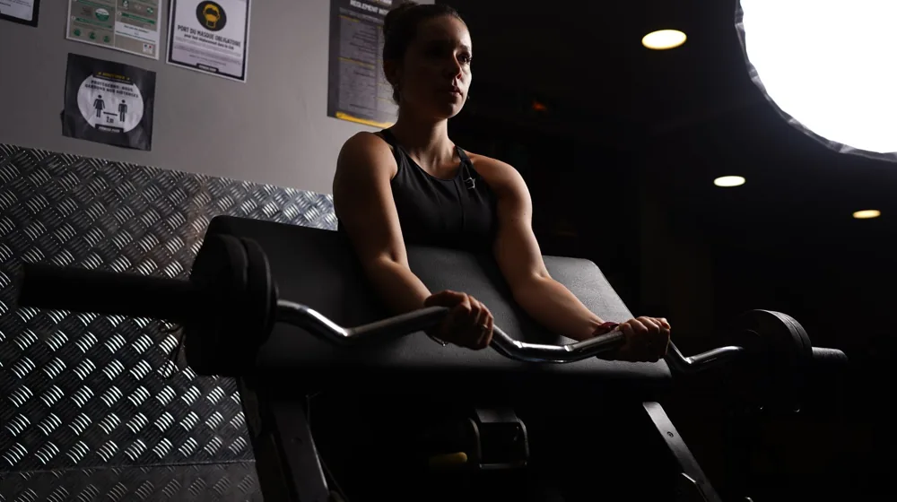

근력운동 초보자 가이드: 실패 없이 시작하는 3단계 핵심 루틴
사진: Javon Thorpe / Pexels (무료 이미지, 출처 표기)
근력운동, 왜 중요할까?

근력운동(웨이트트레이닝)은 단순히 멋진 몸을 만드는 것을 넘어 우리 삶의 질을 높이는 중요한 활동입니다. 규칙적인 근력운동은 기초대사량을 늘려 체중 관리에 도움을 주며, 강한 근육은 관절을 보호하고 올바른 자세를 유지하게 합니다.
특히 나이가 들면서 자연스럽게 줄어드는 근육량 감소를 막아주어 노년기 활력을 유지하는 데 필수적입니다. 건강한 삶을 위한 투자라고 생각하고 지금 바로 시작해보세요.
초보자를 위한 근력운동 시작 전 체크리스트
운동을 시작하기 전에 몇 가지 점검 사항을 확인하면 더욱 안전하고 효율적으로 근력운동을 할 수 있습니다. 부상 위험을 줄이고 목표 달성률을 높이는 중요한 단계입니다.
- 운동 목표 설정: 체중 감량, 근육량 증가, 체력 증진 등 구체적인 목표를 세워야 합니다. 목표가 명확해야 그에 맞는 운동 계획과 식단 관리를 할 수 있습니다.
- 건강 상태 확인: 평소 지병이 있거나 통증이 있는 부위가 있다면, 반드시 운동 시작 전에 의료 전문가와 상담하여 자신의 몸 상태에 맞는 운동 강도와 종류를 파악해야 합니다.
- 운동 환경 선택: 집에서 간단히 시작할지, 헬스장에 등록할지 결정합니다. 헬스장은 다양한 기구와 전문가의 도움을 받을 수 있다는 장점이 있습니다.
- 기본 장비 준비: 편안한 운동복과 미끄럼 방지 기능이 있는 운동화는 필수입니다. 추가로 운동용 장갑이나 물병 등을 준비하면 편리합니다.
안전하고 효과적인 초보자 3분할 루틴
근력운동 초보자에게는 ‘3분할 루틴’이 효과적입니다. 전신 운동보다는 특정 부위를 나누어 운동함으로써 충분한 휴식과 회복 시간을 확보하고, 각 근육에 집중하여 효율을 높일 수 있습니다. 아래는 2026년 11월 기준으로 일반적인 초보자 3분할 루틴의 예시입니다. 본인의 체력에 맞게 중량과 횟수를 조절하는 것이 중요합니다.
각 운동 시에는 거울을 보며 정확한 자세를 유지하는 데 집중하세요. 처음에는 가벼운 무게로 시작하여 자세를 익히고, 점차 중량이나 횟수를 늘려나가는 '점진적 과부하' 원칙을 지키는 것이 근육 성장에 효과적입니다.
근력운동 효과 높이는 식단과 휴식 가이드
근력운동의 효과는 운동 자체뿐만 아니라 균형 잡힌 식단과 충분한 휴식에서 완성됩니다. 이 세 가지 요소가 조화를 이룰 때 비로소 근육 성장을 촉진하고 체력을 회복할 수 있습니다.
단백질은 근육 회복과 성장의 핵심 영양소입니다. 체중 1kg당 1.2~1.7g 정도의 단백질 섭취를 목표로 하며, 닭가슴살, 계란, 소고기, 생선 등을 통해 보충할 수 있습니다. 운동 전후로는 탄수화물을 섭취하여 운동 수행 능력을 높이고 근육 손실을 막는 것이 좋습니다. 또한 충분한 수분 섭취는 신진대사를 원활하게 하고 피로 해소에 도움을 줍니다.
운동만큼 중요한 것이 바로 휴식입니다. 근육은 운동할 때 손상되고 휴식하는 동안 회복하며 성장합니다. 하루 7~8시간의 충분한 수면을 취하고, 같은 부위는 최소 48시간의 휴식을 주는 것이 좋습니다. 오버트레이닝은 오히려 부상과 피로도를 높일 수 있으니 주의해야 합니다.
부상 예방을 위한 핵심 주의사항
근력운동은 건강에 많은 이점을 주지만, 잘못된 방법으로 진행할 경우 부상으로 이어질 수 있습니다. 다음 주의사항을 숙지하여 안전하게 운동하세요.
- 충분한 워밍업과 쿨다운: 운동 전 5~10분간의 유산소 운동과 동적 스트레칭으로 몸을 예열하고, 운동 후에는 정적 스트레칭으로 근육을 이완시켜 부상 위험을 줄입니다.
- 정확한 자세 유지: 가장 중요합니다. 잘못된 자세는 특정 근육에 과도한 부담을 주어 부상을 유발합니다. 초보자라면 트레이너의 지도를 받거나, 거울을 통해 자신의 자세를 점검하는 것이 좋습니다.
- 무리한 중량 피하기: 자신의 근력 수준에 맞는 중량을 선택하고, 점진적으로 늘려나가는 것이 중요합니다. 너무 무거운 중량은 자세를 망가뜨리고 부상을 초래할 수 있습니다.
- 통증 발생 시 즉시 중단: 운동 중 불편함이 아닌 통증이 느껴진다면 즉시 운동을 멈추고 휴식을 취해야 합니다. 통증을 무시하고 운동을 계속하면 만성 부상으로 이어질 수 있습니다.
자신의 몸에 귀 기울이며 안전하게 운동하는 것이 근력운동을 오랫동안 꾸준히 할 수 있는 비결입니다. 궁금한 점은 언제든지 전문가에게 문의하여 정확한 정보를 얻으세요.
🔗 이 글도 함께 보면 좋아요: 홈트레이닝 초보 가이드: 이 3가지부터 시작하면 실패 없습니다
관련 추천 상품
이 포스팅은 쿠팡 파트너스 활동의 일환으로, 이에 따른 일정액의 수수료를 제공받습니다.